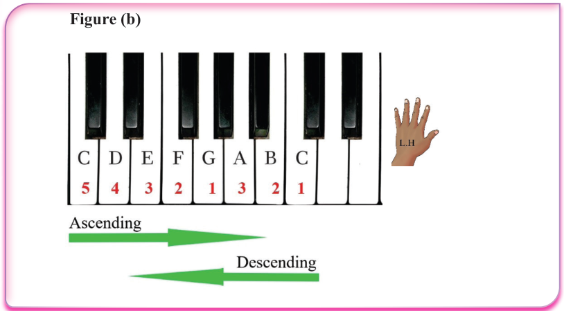
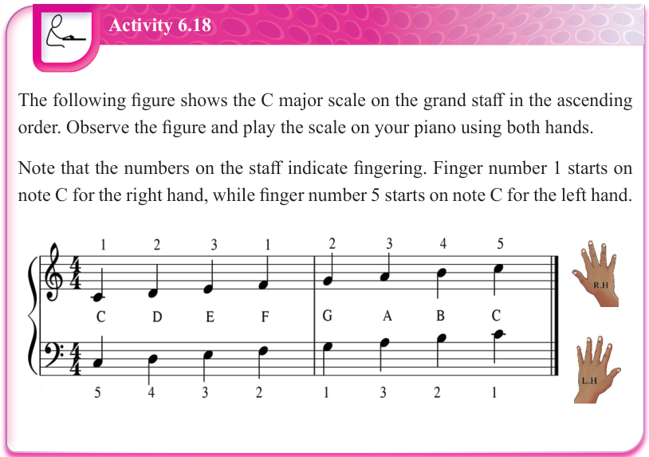

Figure (b)

Figure (b)
Activity 6.18
The following figure shows the C major scale on the grand staff in the ascending order. Observe the figure and play the scale on your piano using both hands.
Note that the numbers on the staff indicate fingering. Finger number 1 starts on note C for the right hand, while finger number 5 starts on note C for the left hand.
